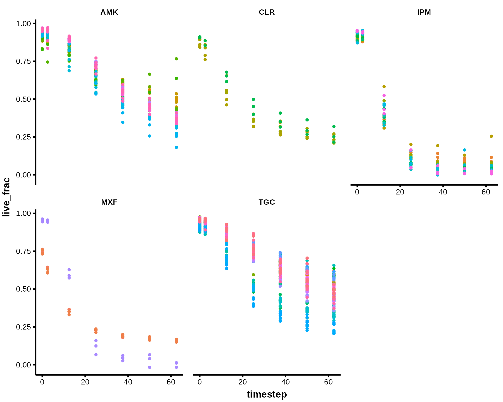
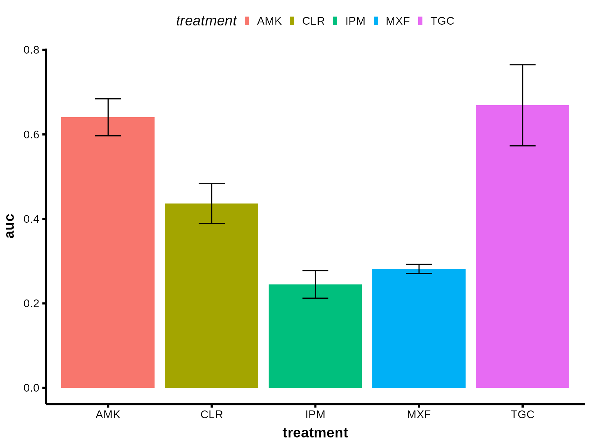

Introduction to BoeckLabRtools
base_analysis.RmdIntroduction
The BoeckLabRtools package provides utilities for analyzing data from experiments in the Boeck Lab. This vignette demonstrates a common workflow: analyzing ASCT (Automated Single-Cell Tracking) killcurves to determine antimicrobial efficacy.
ASCT killcurves track cell death over time by monitoring the uptake of propidium iodide (PI), a fluorescent dye that penetrates dead cells. The resulting data allows us to calculate the area under the curve (AUC) as a measure of antimicrobial effectiveness.
Example analysis of ASCT killcurves generated with our pipelines
The goal of this exercise is to show how to generate kill curves and calculate the AUC from the raw output of the ASCT python pipeline. For this exercise, we will use the example data ported with the package. This data is a subset of the data generated by Mrs Sara Topra, a former master student in our lab. The first step is to load the basic libraries and the data itself
library(BoeckLabRtools)
library(data.table)
library(ggplot2)
library(magrittr)
d <- data.table::as.data.table(BoeckLabRtools::killcurves)The data is a data.table with the following columns:
colnames(d) - file: Character vector
representing the file name - frame: Integer vector
representing the frame number - channel: Integer vector
representing the channel number - date_time: POSIXct
vector with the date and time of the frame - timestep:
Numeric vector representing the time step from the start of the
experiment - object_class: Character vector
representing the object class (single-cell, noise, off-focus, or clump)
- total_count: Integer vector with the total count of
objects for the given class - pi_class_neg: Integer
vector with the PI negative class count - pi_class_pos:
Integer vector the PI positive class count -
area_pineg: Numeric vector of the total area of PI
negative objects - area_pipos: Integer vector of the
total area of PI positive objects
Next, we will try to extract the well and field information that is
stored in the filenaming pattern. For that, we use the
tstrsplit function from the data.table package. The
tstrsplit function is a powerful function that allows us to
split strings based on a regular expression pattern. In this case, we
will split the file name based on the underscore character
(_). The keep argument is used to keep the
second and fourth elements of the split. The result is stored in the
well and field columns.
d[, c("well", "field") := tstrsplit(file, "_", keep = c(2, 4))]
d[, c("row", "col") := data.table::tstrsplit(well, "(?<=\\D)(?=\\d)", perl = TRUE)]
d[, col := as.integer(col)]Filling Missing Classes
The next step is to fill the missing classes. This is due to the fact
that the segmentation and classification algorithm sometimes does not
find object of some class in a particular frame. This is normal, but not
having all the objects for every frame can cause problems downstream.
The fill_missing_classes function is a helper function that
fills the counts of missing classes with 0 values. The
key_cols argument is a character vector with the columns
that will be used to group the data. The fill_col argument
is the column that will be filled. The cols_0count argument
is a character vector with the columns that will be filled with zeros.
The required_values argument is a character vector with all
the unique values that will be used to fill the missing classes.
d <- fill_missing_classes(
dt = d,
key_cols = c("file", "frame", "row", "col", "well", "field"),
fill_col = "object_class",
cols_0count = c("total_count", "pi_class_neg", "pi_class_pos", "area_pineg", "area_pipos"),
required_values = unique(d$object_class)
)Now, given the fact that we have inputed some rows, we also need to fill the data_time and timestep (and maybe other columns), but instead of filling with 0, we fill with the unique time for that frame and file. We take the 2 value because the first value is the NA itself.
Adding Treatment Information
The data is now ready to include the drug info or species info from our plate schema. If your plate schema looks as follows:| row | 3 | 4 | 5 | 6 | 7 | 8 | 9 | 10 | 11 | 12 |
|---|---|---|---|---|---|---|---|---|---|---|
| C | IPM | TGC | TGC | AMK | AMK | AMK | TGC | TGC | MXF | MXF |
| D | IPM | TGC | TGC | AMK | AMK | AMK | TGC | IPM | CLR | CLR |
| E | IPM | TGC | TGC | AMK | TGC | TGC | TGC | IPM | CLR | TGC |
| F | IPM | AMK | AMK | TGC | TGC | TGC | TGC | IPM | TGC | AMK |
| G | MXF | AMK | TGC | TGC | TGC | TGC | TGC | TGC | AMK | TGC |
| H | TGC | AMK | AMK | TGC | TGC | TGC | TGC | IPM | AMK | AMK |
Then, you can use the add_well_info function to include
the drug info in the data table. In this example, we use the already
example plate schema, but you can add the data directly from the
file
d <- add_well_info(d,
plate_schema, # In your case plate schema can be a path to the file
info_name = "treatment",
plate_format = "plate_view"
)Calculating Live Cell Fraction
At this point, we can proceed to calculate the relative live fraction. For that, we will focus on the single-cell objects and then divide the counts of PI cells by the total number of single-cells (PI + no PI single cell). This, give us the fraction of PI positive cells (dead cells). The live fraction is then calculated as 1 - PI fraction.
Interpolating Time Points
Finally, we need to get the same time point for all our frames. For
large experiments, it is very common to have a shift ranging from
minutes to hours from the wells that are scanned early in the loop to
the later wells. To correct this, we use the
interpolate_variable function. This function interpolates
the variable of interest (in this case, the live fraction) for the time
points of interest calculating the linear mid-point between two given
points. The timepoints argument is the time points that we
want to interpolate. We can set plain regular intervals, or a vector of
timepoints of interest (0, 6, 12, 24…). The fill_extremes
argument is used to fill the first and last time points with the first
and last values of the variable of interest. The
return_time argument is used to return the time points of
interest, if we want to interpolate more than one variable, we can set
this to FALSE for subsequent calls. The result is stored in
the interpol_time and interpol_live_frac
columns. Note the use of by = in order to denote that we
interpolate each live fraction by each file. After that, it is also
important to consider that we use the enforce_decrease in
order to make sure that the live fraction is always decreasing.
d_sc[, c("interpol_time", "interpol_live_frac") := interpolate_variable(time = timestep,
values = live_frac,
timepoints = c(0, 3, 6, 9, 12),
fill_extremes = TRUE,
return_time = TRUE),
by = .(file)]
d_sc[, interpol_live_frac := enforce_decrease(interpol_live_frac),
by = .(file)]At this point, we have our kill curves! We only need to plot them. Depending on the size of your dataset, you can do a simple grouped plot by panel or if you have too many conditions, you might need to filter your data.
Visualizing the Kill Curves
# plot
d_sc %>%
ggplot(., aes(x = timestep, y =live_frac, group = file)) +
geom_point(aes(col = well), show.legend = FALSE) +
facet_wrap(treatment ~ .) +
theme_BoeckLab()
Calculating Area Under the Curve (AUC)
For further analysis, we can compress the data to a single value. For
that, we can calculate the area under the curve (AUC) for each well. The
calculate_AUC function calculates the AUC for each well.
The key_cols argument is a character vector with the
columns that will be used to group the data. The value_col
argument is the column that will be used to calculate the AUC. The
time_col argument is the column that will be used as the
x-axis. The result is stored in the AUC column. In this
case, we group by as many variables as we need using the
by = argument.
auc_data <- d_sc[, .(auc = calc_auc(x = interpol_time, y = interpol_live_frac)),
by = .(file, well, field, row, col, treatment)]Summarizing Results by Treatment
As last example figure, we can make a bar plot with error bars for our AUC for each treatment:
auc_data %>%
.[, .(auc = mean(auc), sd_auc = sd(auc)),
by = .(treatment)] %>%
ggplot(., aes(x = treatment, y = auc, fill = treatment)) +
geom_bar(stat = "identity", position = "dodge") +
geom_errorbar(aes(ymin = auc - sd_auc, ymax = auc + sd_auc),
position = position_dodge(width = 0.9), width = 0.25) +
theme_BoeckLab()